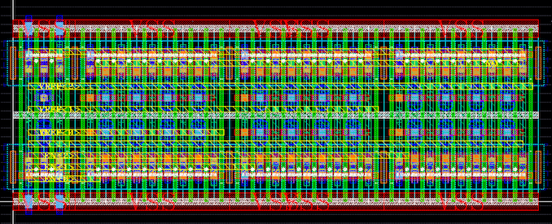
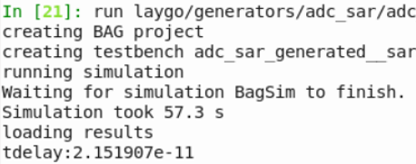

Time-interleaved SAR ADC generator¶
The TISARADC generator has been completely refactored/fixed by Woorham Bae. Please carefully read this document. (Sep. 4. 2018)
This section describes the process of generating a time-interleaved SAR ADC schematic and layout using BAG and laygo.
Overview¶
Time Interleaved Successive Approximation ADC (TISARADC) is a popular way of implementing a moderate precision (4-10 bits) ADC that operates at higher sampling rates than single SAR ADCs can achieve. As an example of demonstrating the automated analog and mixed signal circuits generation flow, the entire TISARADC generator is explained here.
Installation¶
Set up a BAG/laygo working directory for the your technology. For example, cds_ff_mpt environment can be set up by running the following commands.
$ git clone git@github.com:ucb-art/BAG2_cds_ff_mpt.git $ cd BAG2_cds_ff_mpt $ git submodule init $ git submodule update $ git submodule foreach git pull origin master
Note: Workspaces are already set up for BWRC users, for some technologies, to skip step 2,3,5,6. Check
git@bwrcrepo.eecs.berkeley.edu:jdhan/TISARADC_technologyname.gitand use the corresponding repo if exists.Copy configuration files and design libraries from laygo/generators/adc_sar/yaml by typing:
cp laygo/generators/adc_sar/yaml/adc_sar_spec.yaml . cp laygo/generators/adc_sar/yaml/adc_sar_size.yaml . cp -r laygo/generators/adc_sar/BagModules/adc_sar_templates BagModules/ cp -r laygo/generators/adc_sar/adc_sar_templates . cp -r laygo/generators/adc_sar/adc_sar_testbenches .
Note: some repos may already have those files in their working directories.
Add library definitions to your cds.lib (some distributions use cds.lib.core instead of cds.lib)
In cds.lib
DEFINE adc_sar_templates ./adc_sar_templates DEFINE adc_sar_testbenches ./adc_sar_testbenches
Open bag_lib.defs and remove the definition of adc_sar_templates if exist
In bag_lib.defs
adc_sar_templates BagModules #remove this
Run virtuoso and type the following command in CIW.
load "start_bag.il"
Open adc_sar_templates/capdac and update the library name of C0 and CDAC0 to (technology_name)_micretemplates_dense, as shown below.
 CDAC
CDACLaunch bag and run the following import script.
run laygo/generators/adc_sar/adc_sar_import.py
In the IPython interpreter, type the following command to construct the template and grid database. (Make sure proper techlib is attached to the microtemplate library)
run laygo/labs/lab2_a_gridlayoutgenerator_constructtemplate.py
Run the following command to generate the logic gate template library. The library name will be (technology_name)_logic_templates.
run laygo/generators/logic/logic_templates_layout_generator.py
Setting up parameters¶
ADC schematic and layout are constructed based on spec/size parameters defined in 2 configuration files in YAML format (adc_sar_spec.yaml, adc_sar_size.yaml).
Following parameters are defined in the configuration files:
- adc_sar_spec.yaml
- temp: nominal temperature
- temp_min: minimum temperature
- temp_max: maximum temperature
- v_in: nominal input swing (single ended)
- v_in_max: maximum input swing
- v_in_cm: nominal inpuut common mode
- n_bit: number of output bits
- n_bit_cal: number of output bits after digital calibration
- fsamp: effective sampling rate
- n_interleave: interleaving ratio
- c_unit: minimum unit capacitance of CDAC
- c_ground: grounded parasitic capacitance of c_unit
- c_delta: maximum capacitance mismatch of c_unit (normalized by c_unit)
- n_bit_samp_noise: standard deviation of sampling noise (in bits)
- n_bit_samp_settle: maximum sampler settling error in bits
- n_bit_comp_noise: standard deviation of comparator noise in bits
- rdx_array: CDAC radix array
- rdx_enob: Target ENOB after calibration
- cycle_comp: Comparator timing budget in cycle
- cycle_logic: Logic timing budget in cycle
- cycle_dac: DAC timing budget in cycle
- vdd: nominal supply voltage
- vdd_min: minimum supply voltage
- vdd_max: maximum supply voltage
- trf_fo4: nominal logic transition timing
- tfo4: nominal fo4 delay
- samp_use_laygo: True if laygo is used for sampler generation. If false, AnalogBase is used
- samp_with_tgate: True if T-gate sampler is used. IF false, NMOS-only sampler is used. Valid only if laygo is used for sampler generation.
- ret_use_laygo: True if laygo is used for retimer generation. If false, AnalogBase is used
- pmos_body: Default: VDD. Use VSS if flipped well is used.
- use_offset: True if offset calibration is used for the comparator.
- clk_pulse_overlap: Default: False. If true, sampling clock pulses for adjacent ADC slices will be overlapped.
- adc_sar_size.yaml
- device_intent: device intent (i.e. standard, lvt, hvt)
- lch: device channel length
- nw: width (number of fins) of unit NMOS
- pw: width (number of fins) of unit PMOS
- capdac
- c_m: multiplier of CDAC unit capacitor
- num_bits_horizontal: CDAC number of bits in horizontal direction
- num_bits_vertical: CDAC number of bits in vertical direction
- capdrv
- m_list: cap driver multiplier list
- space_offset: cap driver spacing parameter, for routing
- salatch
- doubleSA: True if double-tail sense amplifier is used
- m: strongArm latch input device sizing
- m_buf: strongArm latch output buffer sizing
- m_d: double-tail SA (second stage) input device sizing
- m_rgnn: strongArm latch regenerative latch sizing
- m_rgnp_d: double-tail SA (second stage) regenerative latch sizing
- m_rst: strongArm latch reset device sizing
- m_rst_d: double-tail SA (second stage) reset device sizing
- sarfsm
- m: SAR FSM sizing
- sarlogic
- m: SAR logic sizing
- num_inv_bb: Length of inverter chain for bottom-plate timing calibration
- sarclkgen
- fast: Fast mode - forced negative SARCLK (comparator clock) edge
- fo: SARCLK buffer fanout
- m: SARCLK generator sizing
- ndelay: For fast mode, # of delay units for negative edge
- sarret
- m: SAR logic output retimer sizing
- fo: SAR logic output retimer buffer fanout
- sarabe_m_space_left_4x: number of space cells
- sarabe_supply_rail_mode: Default:0. If VDD/VSS short is observed in “sar” hierarchy, use 1 and regenerate sarabe.
- sampler_nmos: for AnalogBase sampler
- fg_inbuf_list: input sampling clock buffer sizing
- fg_outbuf_list: output sampling clock buffer sizing
- fgn: sampler sizing
- nduml: # of dummy at the left side
- ndumr: # of dummy at the right side
- wn: NMOS width
- wp: PMOS width
- sarsamp: for Laygo sampler
- m_inbuf_list: input sampling clock buffer sizing
- m_outbuf_list: output sampling clock buffer sizing
- m_sw: unit sampler sizing
- m_sw_arr: # of unit sampler
- slice_order: Order of ADC slices, even number on the left side
- clk_dis_capsw
- m: clock generator capdac driving switch sizing
- clk_dis_cell
- m_dff: DFF sizing
- m_inv1: DFF Q buffer sizing (1st)
- m_inv2: DFF Q buffer sizing (2nd)
- m_tgate: Clock output tgate sizing
- clk_dis_cdac
- m: multiplier of CDAC unit capacitor
- num_bits: CDAC number of bits
- clk_dis_htree
- m_clko: number of tracks for clk_dis output clock
- m_track: number of tracks for input clock H-tree
- retimer
- ret_m_ibuf: input clock buffer sizing (last stage: ret_m_ibuf x 16)
- ret_m_latch: retimer latch sizing
- ret_m_obuf: output clock buffer sizing (ret_m_obuf x 4)
- ret_m_sr: duty-cycle correcting SR latch sizing
- ret_m_srbuf: SR latch output buffer sizing
For the starting point, following preset files are provided. They are not 100% finalized, but will serve well for initializations.
- laygo/generators/adc_sar/yaml/adc_sar_spec(size).yaml : 8-way interleaved, 9bit ADC with digital calibration.
TISARADC architecture¶
TISARADC is composed of 4 parts in the top level: ADC core, clock generator, output retimer and biasing.
- The ADC core performs the actual conversion operation. It is composed of multi-phased sampling frontend and N subADC that converts the actual ADC operation at (sampling_rate/N), where N is the interleaving ratio.
- The clock generator receives the high frequency clock at sampling rate, generates multi-phased clock for the interleaved ADC operation.
- The output retimer receives the output from the ADC core, aligns multi-phased signals to a single clock to be received by the following digital backend.
 TISARADC
TISARADC
SubADC frontend layout generation¶
The frontend of subADCs is composed of three parts: capdac (CDAC), strongArm comparator (salatch), cap driver (capdrv). In the proposed flow, the ‘very’ frontend sampling switches are not the part of subADC frontend because they are designed separately, but obviously this is not the only way of partition.
The first block to be generated is CDAC, since this generator assumes the horizontal dimension is limited by CDAC size in x-direction. In order to generate CDAC layout, type:
run laygo/generators/adc_sar/adc_sar_capdac_layout_generator.py
This command will create a CDAC layout in adc_sar_generated/capdac, as shown below.
 CDAC
CDAC- The capdac generator reads n_bit and rdx_array parameters from adc_sar_spec.yaml, and capdac_c_m, capdac_num_bits_vertical, capdac_num_bits_horizontal parameters from adc_sar_size.yaml (or use default settings in the python code if load_from_file is set to false), users can update those parameters and regenerate the capdac. It will create a new CDAC with different shapes, as shown below.
 CDAC
CDAC CDAC
CDACIf you want to generate the schematic as well, type:
run laygo/generators/adc_sar/adc_sar_capdac_schematic_generator.py
The figure shown below is one example of generated schematic. Note that CDAC capacitors (I0-I7) are arrayed, with radix parameters specified by rdx_array.
 CDAC
CDACThe schematic generation is not required for full-ADC generations, since you can generate the whole ADC schematic by running a top-cell generation script (unlike the layout counterpart, which requires running several scripts in series to generate the entire ADC). The CDAC schematic generation is used for cell level verifications though, such as LVS or transfer curve extraction. For LVS, type:
run laygo/generators/adc_sar/adc_sar_capdac_lvs.py
It will give a lvs passed message if the design is LVS clean.
Note: BAG2_cds_ff_mpt / FreePDK45 does not support LVS & extraction at this moment. Skip these steps for those processes
For parasitic extraction, type the following command.
run laygo/generators/adc_sar/adc_sar_capdac_extract.py
Note: this step could take a long time, depending on your extraction setup. Skip this if you just want to quickly go through steps.
You can run simulations on CDAC via BAG framework. The following command will launch the transfer curve simulation with schematic netlists. For the post-extract simulation, set extracted = True in the script.
run laygo/generators/adc_sar/adc_sar_capdac_verify.py
 CDAC testbench options
CDAC testbench options CDAC curve
CDAC curve CDAC noise
CDAC noise
After CDAC generation, PMOS-input sense amplifier layout can be generated by running:
run laygo/generators/adc_sar/adc_sar_salatch_pmos_layout_generator.py
 salatch
salatchNote that the generator assumes the sense amplifier width is narrower than 2x of the CDAC width.
Two topologies available: StrongArm latch and double-tail sense amplifier
Here are additional scripts regarding the strongArm latch:
- adc_sar_salatch_pmos_size.py: transistor size calculator
 salatch
salatch- adc_sar_salatch_pmos_schematic_generator.py: schematic generation
- adc_sar_salatch_pmos_schematic_lvs.py: LVS
- adc_sar_salatch_pmos_schematic_extract.py: RC extraction
- adc_sar_salatch_pmos_verify.py: verifications (clk-q, noise)
 salatch
salatch
The next step is generating capacitor drivers that drive CDAC. Run the following scripts:
run laygo/generators/adc_sar/adc_sar_capdrv_nsw_layout_generator.py run laygo/generators/adc_sar/adc_sar_capdrv_nsw_array_layout_generator.py
This is a 2-step generation; in the first script, individual driver cells are generated. The second script places driver cells (with the sizing parameters defined by capdrv_m_list in adc_sar_size.yaml.
 capdrv
capdrv capdrv
capdrvHere’s one example layout of the capdrv.
capdrv
Here’s the capdrv_array layout (primitive cells are hidden).
 capdrv
capdrvNow it’s time to generate the frontend top layout/schematic. Type:
run laygo/generators/adc_sar/adc_sar_sarafe_nsw_layout_generator.py run laygo/generators/adc_sar/adc_sar_sarafe_nsw_schematic_generator.py run laygo/generators/adc_sar/adc_sar_sarafe_nsw_lvs.py
The commands will create a layout (and schematic) of sarafe_nsw, which is the frontend top of subADC, and run LVS. Try different presets introduced before and see if designs are generated properly.
 sarafe
sarafe
SubADC backend layout generation¶
The backend of subADCs is composed of FSM(sarfsm), SAR logic(sarlogic), clock generator(sarclkgen), and retimer(sarret).
 sarabe
sarabe- SAR FSM: generates window signals that determines which SAR bit corresponds to the current sense amplifier output.
- SAR logic: generates capdac control signal
 sarlogic
sarlogicThere are two path to the SAR logic, SA output and CLKgen/FSM, so timing between them should be checked. (t_ckgen + t_fsm + t_hold < T_SARCLK/2)
sarlogic
Timing check script: adc_sar_sarabe_dualdelay_verify.py
SAR clock generator: generates the asynchronous clock for SAR search operation
- Fast mode on: clock pulsewidth is adjusted by a variable delay line. Clock pulse becomes narrower, eventually disappears.
 sarclkgen
sarclkgen- Fast mode off: More like a ring oscillator. Clock pulse will not disappear.
 sarclkgen
sarclkgenSAR retimer: retimes the SAR logic output from the asynchronous clock domain with the synchoronous clock (sampling clock).
SAR backend top
 sarabe
sarabeRun following scripts to generate those building blocks.
#FSM layout run laygo/generators/adc_sar/adc_sar_sarfsm_layout_generator.py #SAR logic run laygo/generators/adc_sar/adc_sar_sarlogic_wret_layout_generator.py run laygo/generators/adc_sar/adc_sar_sarlogic_wret_array_layout_generator.py #SAR clock generator run laygo/generators/adc_sar/adc_sar_sarclkdelay_layout_generator.py run laygo/generators/adc_sar/adc_sar_sarclkgen_core_static2_layout_generator.py run laygo/generators/adc_sar/adc_sar_sarclkgen_static_layout_generator.py #SAR retimer run laygo/generators/adc_sar/adc_sar_sarret_wckbuf_layout_generator.py #spacing elements for routing/filling run laygo/generators/adc_sar/adc_sar_space_layout_generator.py #SAR backend generation run laygo/generators/adc_sar/adc_sar_sarabe_dualdelay_layout_generator.py
For schematic generation, run scripts. Again, BAG is generating schematics in hierarachical order, so you don’t need to run these scripts if you want to generate in top level.
#FSM layout run laygo/generators/adc_sar/adc_sar_sarfsm_schematic_generator.py #SAR logic run laygo/generators/adc_sar/adc_sar_sarlogic_wret_array_schematic_generator.py #SAR clock generator run laygo/generators/adc_sar/adc_sar_sarclkgen_static_schematic_generator.py #SAR retimer run laygo/generators/adc_sar/adc_sar_sarret_wckbuf_schematic_generator.py #spacing elements for routing/filling run laygo/generators/adc_sar/adc_sar_space_schematic_generator.py #SAR backend generation run laygo/generators/adc_sar/adc_sar_sarabe_dualdelay_schematic_generator.py
The frontend and backend can be integrated by running following scripts.
# layout run laygo/generators/adc_sar/adc_sar_sar_layout_generator.py # schematic run laygo/generators/adc_sar/adc_sar_sar_schematic_generator.py
 sar
sar- Use “sarabe_supply_rail_mode” in adc_sar_size.yaml to avoid VDD/VSS short.
SubADC switch generation¶
The sampling frontend can be generated either from laygo or AnalogBase. While the sampler generated from AnalogBase (written by Eric Chang) is more flexible, associated APIs need to be set up (which is not for the cds_ff_mpt technology), so laygo based sampler is used for this example.
Sizing script gives a simple calculation using the extracted MOS data.
 sarsamp
sarsamp
Run the following script to generate the sampling switches.
# size
run laygo/generators/adc_sar/adc_sar_sarsamp_size.py
# layout
run laygo/generators/adc_sar/adc_sar_sarsamp_layout_generator.py
# schematic
run laygo/generators/adc_sar/adc_sar_sarsamp_schematic_generator.py
# testbench
run laygo/generators/adc_sar/adc_sar_sarsamp_verify.py
 sarsamp
sarsamp
If the AnalogBase is set up for your technology, these scripts will generate the sampling switches.
# layout
run laygo/generators/adc_sar/sampler_nmos_layout_generator.py
# schematic
run laygo/generators/adc_sar/sampler_nmos_schematic_generator.py
Note that the Laygo provides a transmission gate switch option, but the AnalogBase provides guardring option.
SubADC top generation¶
If all subblocks are generated sucessfully, the SubADC top (sar_wsamp) can be easily generated by placing and routing subcells. Run the following scripts to generate the SubADC top.
# layout
run laygo/generators/adc_sar/adc_sar_sar_wsamp_layout_generator.py
# schematic
run laygo/generators/adc_sar/adc_sar_sar_wsamp_schematic_generator.py
The generated layouts shown below are from the full-stack subADC generation with different settings (9b, 6b, 10bits and different sizing parameters).
 sar
sar
SubADC testbench¶
Timing check: adc_sar_testbenches/sar_wsamp_9b_tb_tran_timing
Static testbench: adc_sar_testbenches/sar_wsamp_9b_tb_tran_static (ADC curve, calibration map, SNDR)
 ADC curve
ADC curve
 SNDR
SNDR
Array generation¶
The SAR array can be easily made from running the following scripts.
# layout
run laygo/generators/adc_sar/adc_sar_sar_wsamp_array_layout_generator.py
# schematic
run laygo/generators/adc_sar/adc_sar_sar_wsamp_array_schematic_generator.py
 sar
sar
Clocking path generation¶
Zhongkai Wang and Woorham Bae made schematic and layout generators for the clock generation. The clock generator is basically a shift-register based divider, and each of the divided phaes is assinged to an ADC slice. The order of ADC slices is free to change, as long as we do not mess up the even and odd order.
 clkdis
clkdis
 clkdis
clkdis
The clock generator provides two modes: short pulse mode (default) and 2x pulse mode.
 clkdis
clkdis
Running following scripts will generate the clocking frontend. (You don’t need this for non-interleaving ADCs)
run laygo/generators/adc_sar/clk_dis_capsw_array_layout_generator.py
run laygo/generators/adc_sar/clk_dis_clk_dis_cell_layout_generator.py
run laygo/generators/adc_sar/clk_dis_capdac_layout_generator.py
run laygo/generators/adc_sar/clk_dis_viadel_cell_layout_generator.py
run laygo/generators/adc_sar/clk_dis_viadel_layout_generator.py
run laygo/generators/adc_sar/clk_dis_htree_layout_generator.py
run laygo/generators/adc_sar/clk_dis_viadel_htree_layout_generator.py
run laygo/generators/adc_sar/clk_dis_viadel_htree_schematic_generator.py
The following picture shows generated clocking paths for different interleaving ratio settings
 clkdis
clkdis
Retimer¶
The retimer is generated either of Laygo and AnalogBase.
 retimer
retimer
 retimer
retimer
Laygo generator codes for the final retimer is written by Woorham Bae. Run these scripts to generate the retimer schematic and layout.
run laygo/generators/adc_sar/tisaradc_retimer_layout_generator.py
run laygo/generators/adc_sar/tisaradc_retimer_schematic_generator.py
AnalogBase generator codes for the final retimer is written by Eric Chang. Run these scripts to generate the retimer schematic and layout.
run laygo/generators/adc_sar/adc_retimer_layout_generator.py
run laygo/generators/adc_sar/adc_retimer_schematic_generator.py
TISARADC body (clock+sar+retimer)¶
Following scripts are for generating layout and schematic of TISARADC body.
run laygo/generators/adc_sar/tisaradc_body_core_layout_generator.py
run laygo/generators/adc_sar/tisaradc_body_core_schematic_generator.py
 clkdis
clkdis
Bias¶
Top¶
Full stack generation¶
in laygo/generators/adc_sar, there are various levels of full-stack generators (generating all up to the specified hierarchy). Their filenames end with fullstack_generator.py
Contributors¶
The generator codes are written by Jaeduk Han, Woorham Bae, Eric Chang, Zhongkai Wang, and Pengpeng Lu. This document is written by Jaeduk Han and Woorham Bae.